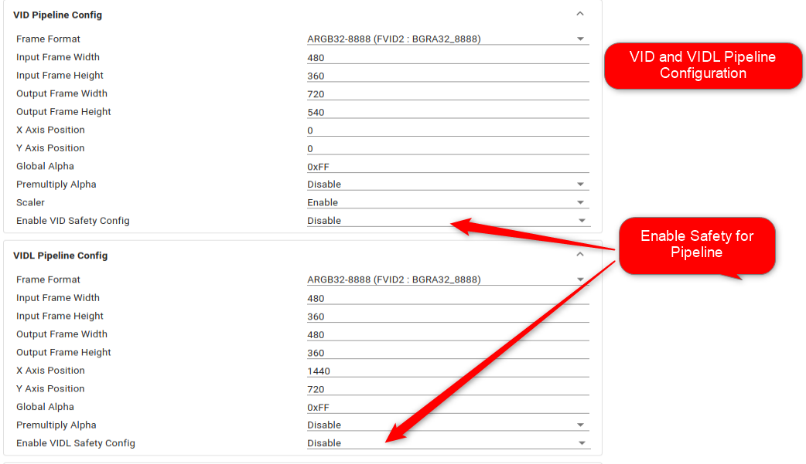
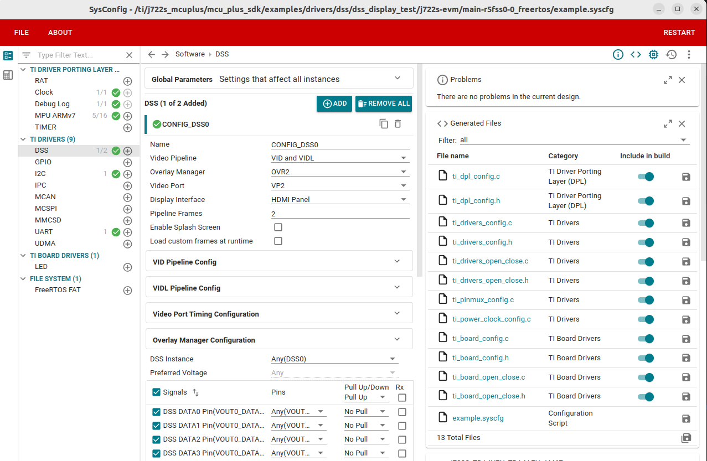
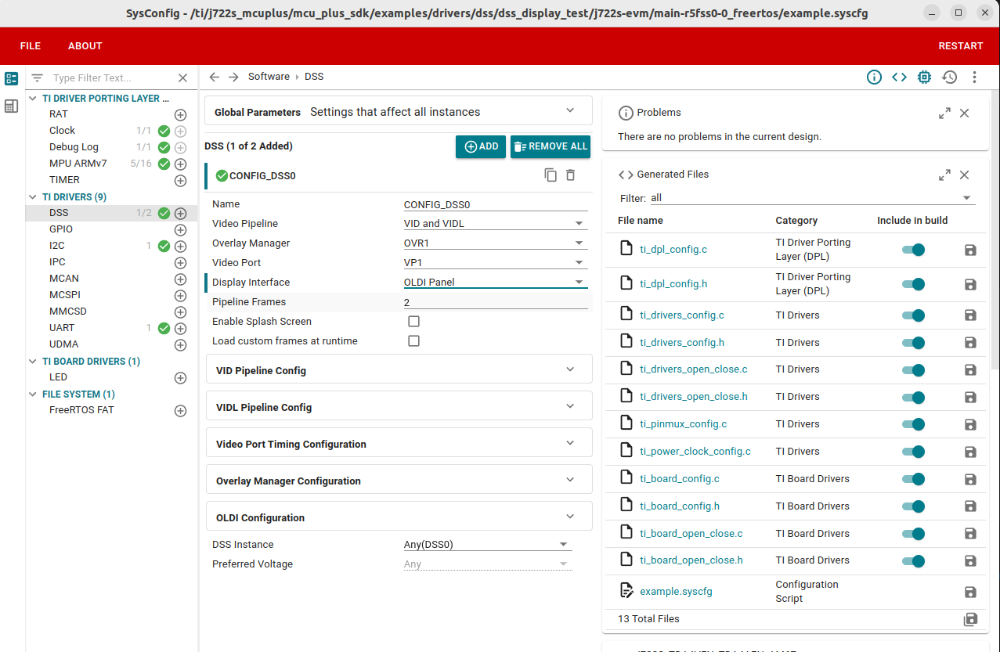
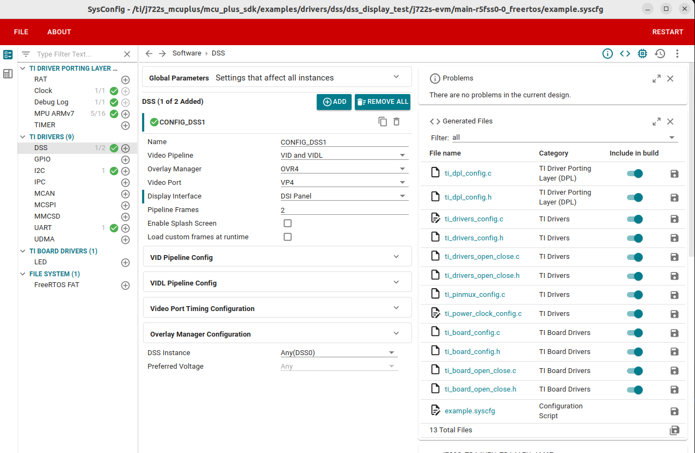
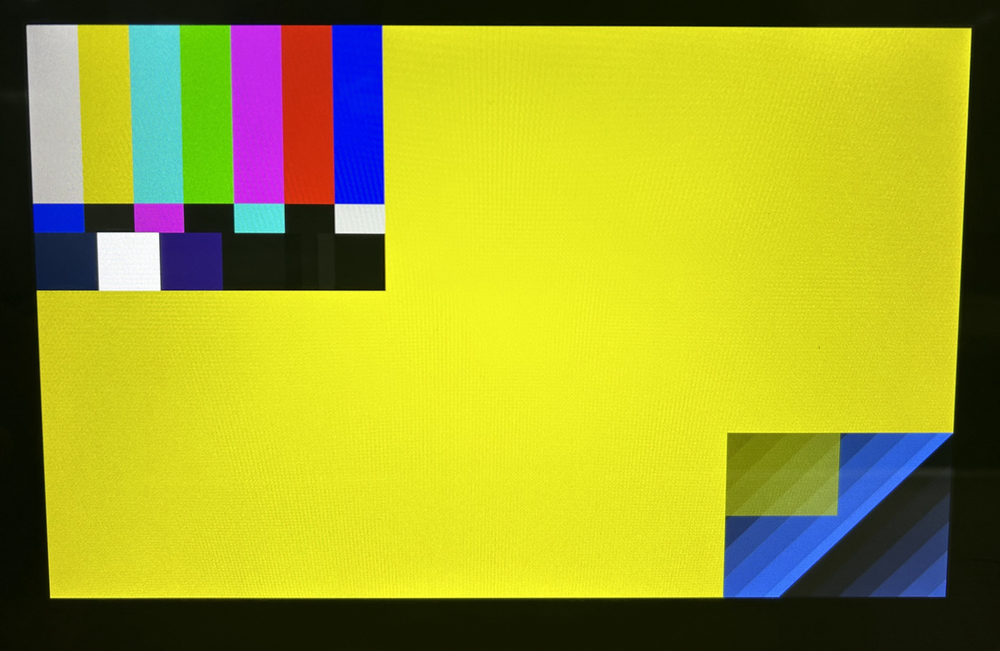

|
J722S MCU+ SDK
11.02.02
|
|
|
J722S MCU+ SDK
11.02.02
|
|
This example tests the complete video pipeline configuration of DSS and displays it on a video port. DSS includes two video pipelines:
The example allocates frame buffers and prepares test pattern for frame buffers for both pipelines in DDR. The example configures both the pipelines VID and VIDL for different attributes like input frame format, scaling, global alpha, and more. The mentioned VID and VIDL configurations are done as part of DSS driver sysconfig options shown below.

The example generates test pattern for both pipelines based on the frame format selected. The supported frame formats are RGB 16-bit, RGB 32-bit, RGB 64-bit, RGB 24-bit and YUV formats.
The example configures Zorder for overlay manager where VID and VIDL pipelines have Zorder 1 and 2 respectively. The Zorder can be changed using sysconfig option. The example configures scaling by default for VID pipeline. The VIDL pipeline does not support scaling for input frames.
The example configures DPI Panel for Video Port 2. It sets the video timing parameters for DPI output interface. The example also adds a Panel driver that configures a Sii9022a bridge driver for DPI to HDMI output on board.
| Parameter | Value |
|---|---|
| CPU + OS | main-r5fss0-0 freertos |
| Toolchain | ti-arm-clang |
| Board | j722s-evm |
| Example folder | examples/drivers/dss/dss_display_test |



Display Output

 1.8.20
1.8.20